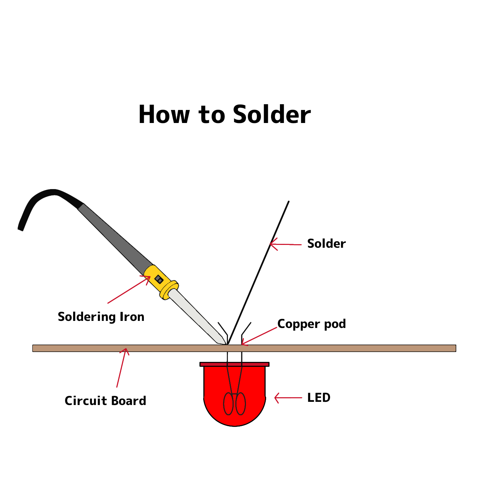
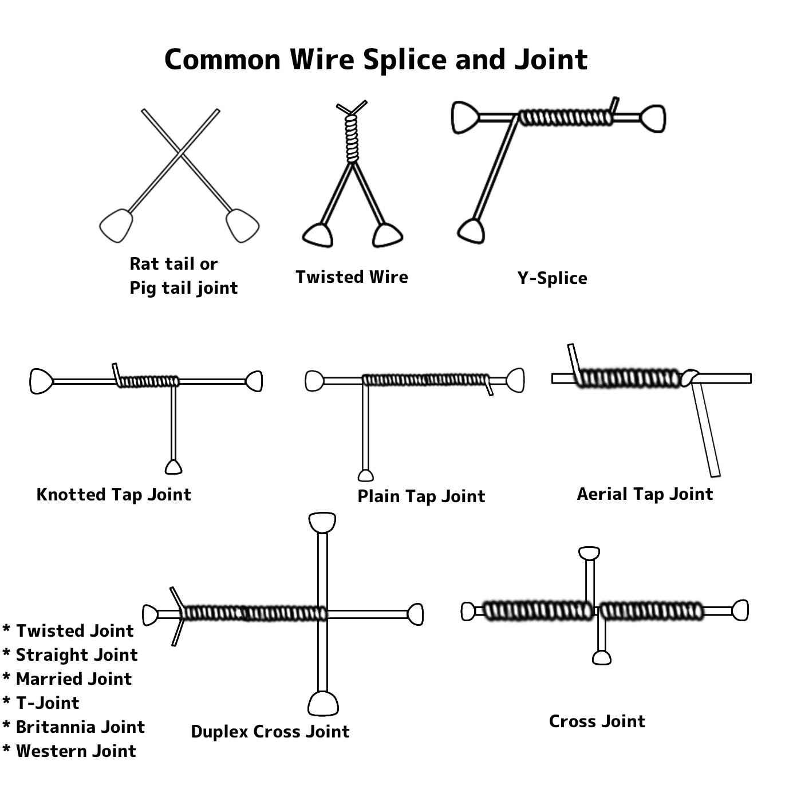

| Insulator | Semi-Conductor | Conductor |
|---|---|---|
| * Rubber * Water. * Wood. * Dry air. |
* Selicon. * Germinium. |
* Water. * Carbon. * Mercury * Iron * Aluminun * Copper * Silver |
CONDUCTOR LOWER RESISTOR- ALLOW
INSULATOR HIGH RESISTOR- DOES NOT ALLOW
WIRES - a single conductor (materials most commonly being are copper and aluminum.)
CABLES - is two or more insulator wire crapped in one jacket.
SOLID WIRES - is a single conductor that is either barc or insulated.
STRANDED WIRES - composed of inquiry this strands together.
1. Twisted pairs - two cables twisted accross each other.
2. Multi-conductor cable - two or more conductors that are insulated to each other.
3. Coaxial cable - composed of inner solid conductor that is protected by an insulating layer.
4. Fiber optic cable - composed of many micro fibers.
ELECTRICAL TERMINATION - is an electrical industry term used to describe the specific point out which a conductive device such as wire or cable. A wire typically ends or terminates, at the terminal block: but the electricity or c signal may be passed out of the terminal connectors.
SOLDERING - is a process by which two or more metal items are joined together by melting and then following a filler metal into joined the filter metal having a relatively low melting point.
Crimping - is joining piecess of metal other duetile material (usually a wire and a metal) by performing one or both or than to hold the other.
- Are Multi - Computing devices that are connected to each other, exchange and share resources.
GOALS:
1. communication
2. sharing/filesharing
3. sending and receiving
BENEFITS:
1. efficiency
2. share info or lessly
3. increase productivity
TYPES OF NETWORKING (MATERIALS)
1. wired networking
2. wireless
TYPES OF NETWORKING (AREA)
1. LAN- local are network
2. WAN- wide are network
3. PAN- personal are network
4. MAN- metropolitan area network
LAN CABLE:
-availability
- durability
- cost efficiency
TWISTED PAIRS
TYPES OF LAN CABLE (connection)
1. Straight through cable
2. Crossover cable